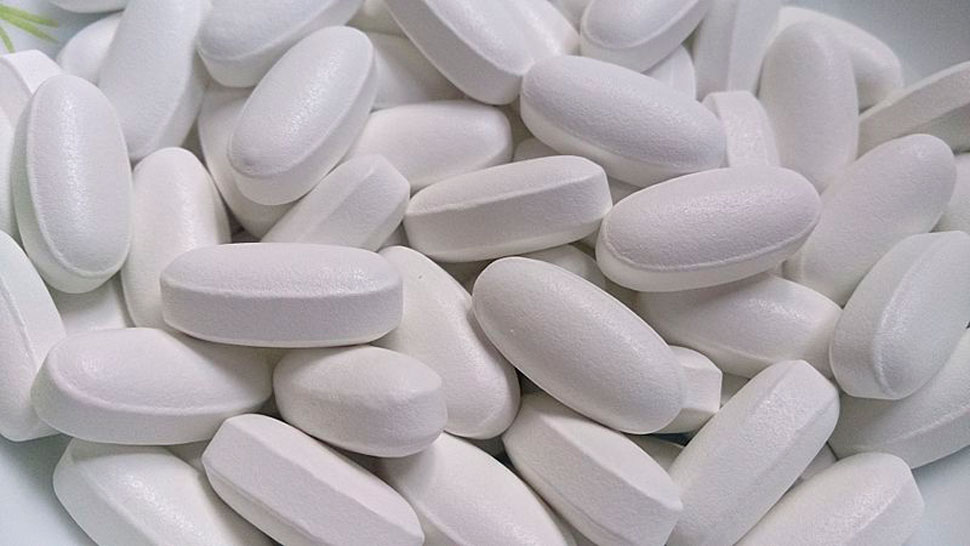

Solo la conoscenza distingue una persona malata da una sana: un'opinione di esperti sul trattamento del diabete
Lo stato di diabete permanente è un malinteso comune e triste. Così afferma Richard Tyler, uno dei principali endocrinologi negli Stati Uniti con oltre 30 anni di esperienza. Pazienti da tutto il mondo si rivolgono a lui per un consiglio, sia americani che canadesi ed europei, comprese varie celebrità. È inoltre autore di 9 monografie, 37 articoli e numerose pubblicazioni su riviste scientifiche.

Il dottor Tyler insiste sul fatto che la stragrande maggioranza dei casi di diabete di tipo 2 può essere curata con preparati moderni.
- Problemi di endocrinologia;
- Perché non puoi essere trattato con metformina;
- Metodi moderni di trattamento del diabete.
Ciao! Siamo molto felici che tu abbia accettato di concederci un'intervista. Per un dottore star questa è una rarità.
Penso che tu stia facendo un buon lavoro. Portare la verità alle persone è lodevole. Sarò felice di rispondere alle tue domande.
Bene. Abbiamo sentito parlare molto della tua posizione categorica sul diabete. Nonostante l'opinione pubblica, affermi che il diabete di tipo 2 è curabile?
Certo. Insisto sul fatto che il diabete può e deve essere curato.
Sfortunatamente, per la maggior parte, i pazienti fanno affidamento su farmaci obsoleti dal punto di vista scientifico. Le persone pensano che tali medicinali siano testati dal tempo, ma in realtà questo approccio accorcia le loro vite.
Quindi sei contrario alla terapia convenzionale?
No. Penso che sia ora di lasciare i farmaci che sono stati usati 100 anni fa, nel passato. Non sono più efficaci e benefici delle sanguisughe e del salasso. In alcuni casi le vecchie tecniche possono anche risultare pericolose..
In primo luogo, intendo farmaci a base di metformina. Ce ne sono molti: Bahomet, Glikonon, Novamet, Glucofage... Posso elencarli a lungo, ci sono circa 20 opzioni comuni. Quindi, tutte queste pillole non sono solo inutili, ma letteralmente danneggiano i pazienti.

Stimolano la produzione eccessiva di insulina. Non dimentichiamoci dell'elevata concentrazione di glucosio. Un eccesso di sostanze rende il sangue più viscoso, come il caramello.
- I vasi si deteriorano istantaneamente: un rallentamento del flusso sanguigno rende difficile la pulizia delle pareti, di conseguenza il colesterolo si accumula e forma placche. Poi arriva l'ipertensione, una frequente compagna del diabete.
- Il fegato e i reni non riescono a far fronte a così tanti ormoni (lascia che ti ricordi che l'insulina è un ormone), i loro tessuti si consumano e si sviluppano altre malattie.
- L'insufficienza ormonale provoca lo sviluppo di cellule atipiche e sorgono tumori. E stiamo parlando di un'altra terribile malattia, il cancro.
Questo è simile al sovraccarico di un apparecchio elettrico, quando l'intero sistema si guasta a causa di una reazione a catena. Il rischio di varie patologie sta diventando critico
E a cosa portano esattamente questi trattamenti?
Le conseguenze dell'uso della metformina sono deplorevoli:
- Disturbi digestivi
dalla diarrea alle ulcere allo stomaco. Dati i problemi con il metabolismo nei diabetici, questo è davvero pericoloso.
- Ipertensione
Improvvisi sbalzi di pressione riducono gravemente la qualità della vita del paziente. Provocano mal di testa, acufeni e attacchi di panico.
- Cirrosi
le cellule epatiche sane sono sostituite dal tessuto connettivo. Di conseguenza, le tossine non vengono rimosse dal corpo, ma si diffondono attraverso il corpo con il sangue, avvelenando gli organi.
- Calcoli renali
I diabetici sono costantemente a rischio di sviluppare nefropatia, insufficienza renale. L'urolitiasi può esacerbare la situazione.
- Aneurisma
Il deterioramento dei vasi sanguigni porta a emorragie spontanee con esiti spesso fatali.
L'insorgenza di complicanze è difficile da prevedere, poiché dipende da tutta una serie di fattori: durata del trattamento, farmaci assunti, predisposizione ereditaria, stile di vita, ecc. Tuttavia, la percentuale di pazienti che subiscono le conseguenze dell'uso di metformina è estremamente alta. Secondo le mie osservazioni personali, circa il 90%.
Se la metformina è così pericolosa, perché i medici la prescrivono?
La maggior parte dei medici attribuisce il deterioramento della salute dei propri pazienti al diabete. La metformina ha un effetto a breve termine, aumentare la quantità di insulina aiuta a ridurre i livelli di glucosio, ma nel tempo la dose deve essere aumentata. Più lungo è il corso, più metformina è necessaria e più insulina entra nel flusso sanguigno.
Mal di testa, affaticamento, problemi renali sono tipici dei diabetici, quindi è facile spostare la responsabilità sulla malattia. Prendi più metformina, dice il dottore.
È un circolo vizioso.
Inoltre, non dimentichiamo la motivazione monetaria. I farmaci a base di metformina sono economici. Spesso i farmacisti “negoziano” con i medici per consigliare un rimedio specifico. Quindi vincono tutti, tranne i pazienti.
La tua descrizione è come…
Sì, io stesso penso spesso che questo ricordi la tossicodipendenza. Mantenendo l'illusione che il diabete sia per sempre, i pazienti hanno un bisogno crescente di metformina.

Quindi la prima cosa da fare è sbarazzarsi del pregiudizio.
E come curare allora il diabete? Cercare altri farmaci che stimolino la produzione di insulina?
No. Il diabete è una malattia complessa che colpisce l'intero corpo umano. Non puoi semplicemente costringere il tuo corpo a produrre più insulina: questo non risolve i problemi, ma ne crea di nuovi. La metformina ne è un ottimo esempio.
Per curare il diabete sono necessari preparati complessi che non solo mantengano i livelli di insulina, ma aumentino anche la suscettibilità delle cellule ad esso, rafforzino l'intero corpo e combattano le complicanze.
Personalmente ho optato per .È completamente naturale, a differenza dei farmaci a base di metformina, un composto chimico isolato artificialmente. Ciò significa che non ha effetti collaterali. Inoltre, contiene 28 estratti di erbe, accuratamente selezionate in modo che i componenti si completino a vicenda.
Ci sono pochissimi farmaci che possono essere prescritti per il diabete, ma ha dimostrato di essere un rimedio universale. Lo consiglio a tutti i miei pazienti.
Anche alle celebrità?
Sì, anche a loro (ride).
 Vi presentiamo un estratto da
un'intervista con Tom Hanks, attore e regista e paziente del dottor Tyler.
Vi presentiamo un estratto da
un'intervista con Tom Hanks, attore e regista e paziente del dottor Tyler.
Nella mia giovinezza, ero sconsiderato riguardo alla mia salute e non pensavo affatto ai pericoli di una cattiva alimentazione. Sì, e la professione presupponeva che mi sarei adattato ai ruoli imminenti: per uno dovevo ingrassare e per l'altro dovevo perdere il doppio del peso. Non c'è da sorprendersi che all'età di 36 anni avessi già la glicemia alta.
Nel 2013 mi è stato diagnosticato il diabete di tipo 2. Poi ho capito quanto sia grave. Il dottore ha detto che sarei migliorato se fossi tornato al peso che avevo al liceo: 64 kg, penso che tu capisca che è impossibile.
In pubblico ci scherzavo su, dicendo che il guaio non era grande. Ma devo ammettere che il verdetto degli endocrinologi mi ha spaventato. Ho cambiato stile di vita, ho iniziato a seguire una dieta e persino praticare sport, ma le mie condizioni sono peggiorate nonostante tutti gli sforzi. I medici uno dopo l'altro hanno affermato che non potevano aiutarmi con nient'altro. Fu allora che mi rivolsi al dottor Tyler.
Non è stato affatto sorpreso di sapere che sono stato trattato con metformina. E mi ha semplicemente prescritto un nuovo prodotto, . Dopo una settimana di assunzione, ho già notato la differenza. E quando ho finito il ciclo terapeutico, mi sono dimenticato dei sintomi in generale. Per ogni evenienza, chiarirò che non lo prendo più, questo è bastato.
Certo, cerco ancora di mangiare bene, camminare e fare esercizio, ma ora almeno posso permettermi una cena abbondante. Non ho più paura del diabete e delle sue conseguenze. Tutto grazie a questo farmaco e, ovviamente, al medico che lo ha consigliato.
E quanto dura il trattamento?
Sarò onesto con te, tutto dipende dalla situazione. Non dovresti contare su un recupero istantaneo, poiché il composto ha lo scopo di ripristinare e aggiornare l'intero organismo. Questo è un processo lungo e laborioso, può richiedere mesi.
Ma quando il corso volge al termine, non avrai più bisogno di farmaci. La tua salute sarà ripristinata e lo zucchero non sarà più un problema per te.
Il recupero avviene per fasi.
- I vasi vengono prima puliti
Grazie al ginkgo biloba, le pareti dei vasi sanguigni diventano più elastiche, il che consente loro di purificarsi dal colesterolo e dai coaguli di sangue. Quindi i piccoli capillari vengono rafforzati e gli organi vengono forniti di ossigeno e sostanze utili.
- Diminuzione dei livelli di zucchero nel sangue
Il meccanismo d'azione del farmaco è molto importante. La concentrazione di glucosio diminuisce non a causa della produzione incontrollata di insulina da parte del pancreas, ma a causa di una diminuzione della resistenza all'insulina.
Lascia che ti faccia un'analogia: invece di gridare più forte, miglioriamo l'udito, la capacità delle cellule di percepire l'insulina.
- L'eccesso di peso scompare
L’eccesso di peso aumenta il rischio di complicanze nei diabetici, peggiora lo stato del sistema cardiovascolare e il carico sugli altri organi. Allo stesso tempo, con livelli di zucchero elevati, è molto difficile dimagrire: il diabete attenua la sensazione di fame.
Tra i componenti di c’è la cannella che oltre all'effetto ipoglicemizzante, ha la capacità di accelerare il metabolismo e favorire l'elaborazione del grasso corporeo. Questo è un vero bruciagrassi naturale.
- La libido ritorna
La disfunzione sessuale non è rara tra i diabetici. Ma risolve anche questo problema: il farmaco normalizza l'equilibrio ormonale e migliora la produzione di testosterone. Per quanto ne so, durante gli studi clinici, questo effetto è stato notato anche da uomini di età superiore ai 60 anni.
- Il corpo viene purificato
Una disintossicazione naturale rimuove tutto ciò che è superfluo dal corpo e il corpo ha le risorse per rinnovare i tessuti. Di conseguenza, viene ripristinato il lavoro di molti organi danneggiati dalla malattia e allo stesso tempo, viene rafforzata l'immunità.
Tutto questo suona alla grande. Ma ad essere onesto, vorrei sapere come tutto ciò influisca sul tenore di vita dei pazienti.
Ok, cercherò di essere più con i piedi per terra. Probabilmente hai sentito parlare dell'effetto farfalla. Ecco, innesca una reazione a catena.
Da un'indagine sui pazienti, ho compilato la seguente immagine del trattamento:
- La fatica viene ridotta
Dopo una settimana, la sonnolenza scompare, la sensazione di stanchezza costante scompare. Il risveglio facile e il tono mattutino saranno un piacevole inizio di giornata e nel tempo diventeranno familiari.
- L'umore migliora
Un mese dopo, i pazienti definiscono la loro condizione come buona e stabile. Senza sete, fame continua e frequente bisogno di andare in bagno, molte persone provano sollievo dalla tensione nervosa.
- Il cibo preferito non è più motivo di preoccupazione
Dopo il corso completo, potrai occasionalmente concederti piatti che prima non potevi permetterti a causa dell'ansia per i livelli di zucchero.
- L'equilibrio idrico sta migliorando
L'edema non ti disturberà più. Una corsa di cinque minuti in negozio non sarà più un problema, anzi riscoprirai la gioia delle lunghe passeggiate.
- Aumento della concentrazione
Il ripristino del metabolismo dei carboidrati contribuisce alla nutrizione stabile del cervello, che ha un effetto positivo sulla memoria e sulla capacità di concentrazione.
- La vista migliora
Il rafforzamento dei vasi sanguigni e dei capillari nel tempo colpisce gli occhi. Di conseguenza, ritorna la vista.

Tutto sommato, è una macchina del tempo reale, migliora notevolmente la qualità della vita di molti pazienti.
E `veramente forte. Puoi dirmi se questo composto può essere acquistato al di fuori degli Stati Uniti? Intendo in UE.
Non sono sicuro che questo prodotto sia disponibile nelle farmacie europee. Probabilmente no. Ma so per certo che nell'UE è distribuito attraverso il sito ufficiale del produttore, quindi è più facile venderlo a varie cliniche.
Il produttore affronta il problema degli speculatori in modo molto responsabile, quindi devi lasciare il tuo numero per acquistare. Ogni cliente viene richiamato da un operatore che fornisce consulenza su tutte le questioni. Inoltre, sul sito vengono regolarmente organizzate promozioni.
Per quanto ne so, la prossima durerà fino a 14.06.2022.
Grazie mille, dottor Tyler. Hai altri consigli per i nostri lettori?
Auguro a tutti buona salute. Pensate con la mente e siate vigili, amici. La salute dovrebbe essere la vostra prima preoccupazione. Per tutti coloro che vogliono ordinare Lascio un link al sito ufficiale.